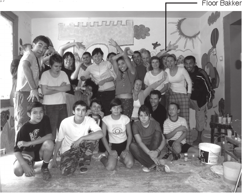
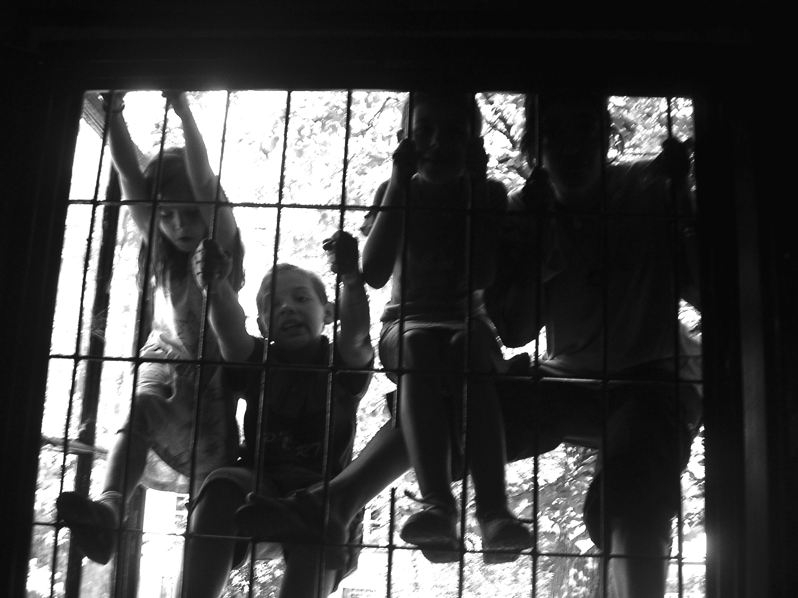

Projecten
Overig
Lublin - Polen 2006
Kampverslag: Lublin (Polen) Floor Bakker
In de zomer van 2006 nam ik deel aan een werkkamp in Lublin, een schattig stadje gelegen in het zuidoosten van Polen. Het was mijn tweede werkkamp bij VIA - eerder trok ik naar voormalig concentratiekamp Neuengamme in Duitsland om daar een tentoonstelling op te zetten. Ditmaal bestond het werk echter uit het renoveren van een opvangcentrum voor probleemjongeren uit de buurt en het ondernemen van activiteiten met deze jongeren. Lees hieronder een verslag van alle mooie, vreemde, spannende en enerverende zaken die ik aldaar doormaakte. Trek je eigen conclusies; op werkkamp gaan is niet altijd gemakkelijk, maar het is wel een ervaring die een hoop toevoegt aan je leven. Mijn avonturen in Polen had ik in allerlei elk geval voor geen goud willen missen!

Zondagmiddag 13 augustus, 17.15. De trein naar Lublin vertrekt met bijna een half uur vertraging vanaf Krakow. De onzekerheid is alomtegenwoordig, ik begin zelfs te twijfelen of ik wel naar de juiste stad reis. Mijn sms-jes worden niet beantwoord en ik vraag me af wat te doen als ik in het pikkedonker zonder een woord Pools in de verkeerde stad beland. Gelukkig verdwijnt alle onzekerheid zodra ik aankom. Ik word opgepikt door de Poolse kampleider Agata en leer meteen twee andere vrijwilligers
kennen: de Spaanse meisjes Marisa en Diana. Aangekomen op locatie blijkt een ontzettend leuke groep mensen ons op te wachten. Dus: Het was fantastisch! Het opvangcentrum, waar we tevens sliepen en leefden, was ook geweldig. De eerste week hadden we geen douche, geen warm water, één half functionerend toilet en haperende elektriciteit. Maar serieus, het huis was geweldig - de kamers waren in kleurtjes geschilderd en met kunstwerken behangen. Ik wou dat mijn huis zo vet was! Ik was meteen verliefd. Op Tirion. Tirion wordt gebruikt om kinderen uit de buurt, die opgroeien in problematische families, op te vangen en ze een fijne jeugd te geven. Daarnaast worden door een andere organisatie, Tektura genaamd, alternatieve feesten en culturele activiteiten georganiseerd. Allemaal ontzettend nobel en idealistisch verantwoord dus. Helaas was Tirion een beetje oud, afbladderend en vervallen. Aldaar onze taak: de renovatie van enkele kamers. En dat samen met de lokale vrijwilligers en de kinderen, om tegelijkertijd wat jonge horizonnetjes te verbreden. Ik voelde me meteen thuis.
"Is je 21e verjaardag iets wat je wilt delen
met mensen die je net een week kent?"
Ik denk dat ik nog nooit zoveel bijzondere mensen bij elkaar heb gezien. Niet alleen de internationale vrijwilligers, maar ook de lokale roepen een grote bewondering bij me op. Ze zetten zich werkelijk met hart en ziel in voor de onderneming, en dat zonder er iets voor terug te krijgen. Het toont me hoeveel meer een glimlach waard is dan al het geld van de wereld. Het was geweldig om samen te werken met mensen die dat ook beseffen. En niet alleen het werk dat deze mensen met zijn allen verzetten intrigeert me; het zijn gewoonweg zulke ontzettend lieve mensen. Allemaal. Ik heb er nog nooit zoveel ontmoet in twee weken. Ik ben er nog steeds een beetje beduusd onder, moet ik toegeven. Ik heb vooral diep respect voor Agnieszka, die met haar 23 jaar de tent runt, alleen en vrijwillig, naast een fulltime studie wiskunde nota bene. Ook in de internationale groep voelde ik me direct thuis. We waren met 14 mensen, woonden in twee kamers, sliepen op campingmatjes, en leefden zonder werkelijke faciliteiten.
Als dat geen band schept...En internationaal was de groep in ieder geval. De leiders waren de Poolse Agata en de Italiaan Ale(ssandro). Er waren twee Poolse vrijwilligers, Magda en Ola, en twee Italiaanse, Laura en Tomasso. Dan waren er de twee Spaanse meisjes, de Hongaarse Agi, de Belgische Liesanne, de Tsjech Tomas, de Ukraïen Ivan, de Fransman Francois - die helaas na twee dagen vertrok wegens taalproblemen- en ik. Ik voelde meteen een klik; we deden de titel van dit kamp eer aan - letʼs do it together!
Letʼs do it together. Met de liefste kinderen van de wereld, met de meest bijzondere jonge mensen die ik in mijn leven heb ontmoet en met elkaar. En als klapper op de vuurpijl met een groep verstandelijk gehandicapten, die artistieke workshopsaanboden. En alsof dat allemaal nog niet genoeg was, kwam het filmfestival "Kosovo Stop Klatka" naar Tirion. Twee Kosovaanse jongens maakten samen met een Pools meisje een tour door Polen met vier korte documentaires over mensenrechten in Kosovo. Het opende mijn ogen. Het is bizar dat deze twee lieve, open en intelligente jongens opgroeiden in een gemeenschap waar
gelijkberechtigdheid geen vanzelfsprekendheid is. Waar meisjes niet geacht worden een stap buiten de deur te zetten. Waar je moet liegen over je afkomst om geaccepteerd te worden. Waar vluchten wellicht de enige optie is. Het was wederom een ontzettend bijzondere ervaring. Ik ben blij te hebben kunnen bijdragen aan dit filmfestival, en ik ben blij dat ik Driton en Sami heb ontmoet. En dat niet alleen omdat Driton me Stairway to Heaven heeft leren spelen op de gitaar. Ook omdat het trappetje naar de hemel misschien niet voor iedereen even bereikbaar is en dit wel is waar we naar moeten streven. De strijd voor mensenrechten gaat door; ook binnen Europa. Bizar.
Tevens viel mijn 21e verjaardag viel tijdens het kamp. Ik was er ambivalent over; is je 21e verjaardag iets wat je wilt delen met mensen die je net een week kent? Het antwoord op deze vraag bleek bevestigend. In elk geval wel met deze mensen. Ik werd op mijn verjaardag verrast met een door Ale gefabriceerde chocoladetaart, belegd met mijn zelf meegebrachte Venz. Ik kreeg er een biertje bij en er werd met champagne geknald. Ik kreeg een knuffelbeertje van de kinderen en een bloem van Agnieszka. Maar het meest bijzondere cadeau kreeg ik van de Poolse vrijwilliger Cuba. Hij gaf me een foto van een poort in Lublin met uitzicht op het kasteel. Zijn woorden erbij: "There is a spot on the horizon where you wanna go. Maybe there are even more. And I know that you will find it, even if you donʼt know the way." Tranen in mijn ogen! Dat is wat ik bedoel als ik het over bijzondere mensen heb. Als iedereen op de wereld zo zou zijn als Cuba, dan zou het misschien ooit nog eens goed komen met de mensheid.
"Als iedereen op de wereld zo zou zijn als Cuba,
dan zou het misschien ooit nog
eens goed komen met de mensheid."
Maar zoals alles ging ook dit avontuur helaas voorbij. Ik zal een aantal dingen nooit vergeten. De kinderen, de spelletjes, de knuffels, de lachjes, de traantjes en het respect voor de kleine dingen. Alle bijzondere mensen die ik heb ontmoet en alle bijzondere dingen die ik heb gedaan. Het schuren, het schilderen, de mozaïekvloer, de muur vol kunstwerken. De tripjes naar de douche, de tripjes naar de nachtwinkel, het secret friend spel, het dagboek op de wc, de urenlange gesprekken, het slaaptekort en het bewijs dat vele handen licht werk maken. Letʼs do it together. Ik had geen betere keuze kunnen maken!
Uiteraard heb ik geluk gehad - ik trof de juiste mensen, ik zat lekker in mijn vel en ik voelde me thuis. Meer thuis dan in mijn eigen studentenkamertje in Amsterdam, en dat is iets waar geen haperende elektriciteit of missende faciliteit iets aan kan veranderen. Natuurlijk kan het ook anders uitpakken. Een werkkamp is soms moeilijk, soms zwaar. Soms vertrekken mensen eerder omdat ze zich niet op hun plaats voelen. Dat gebeurt allemaal. Maar dat is geen reden om niet te gaan. Want als er iets is dat voldoening geeft, dan is het wel een werkkamp!
Ik hoop met dit verslag een ieder geïnspireerd of in ieder geval een tijdje geboeid te hebben. Tevens hoop ik dat een ieder besluit dit jaar een steentje bij te dragen aan een betere wereld. Want dat is waar VIA voor staat. Letʼs do it. And letʼs do it together!
